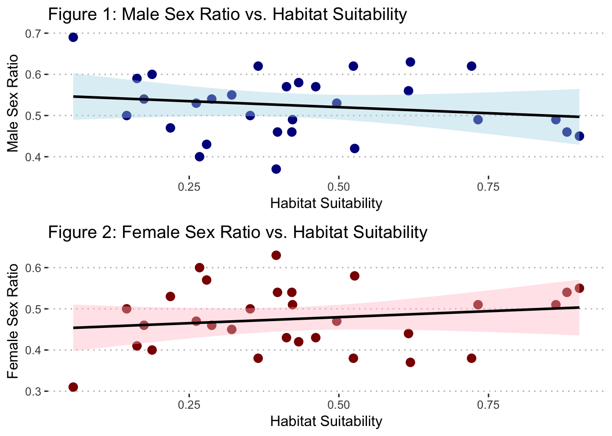
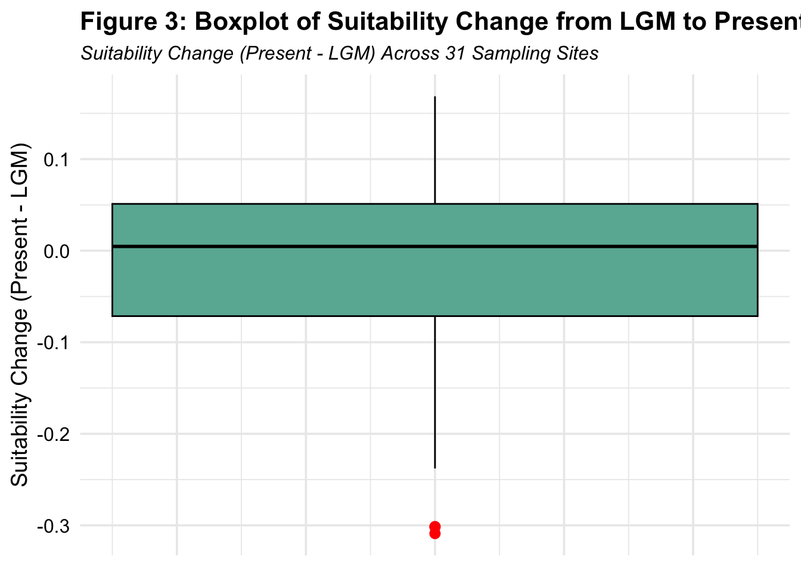
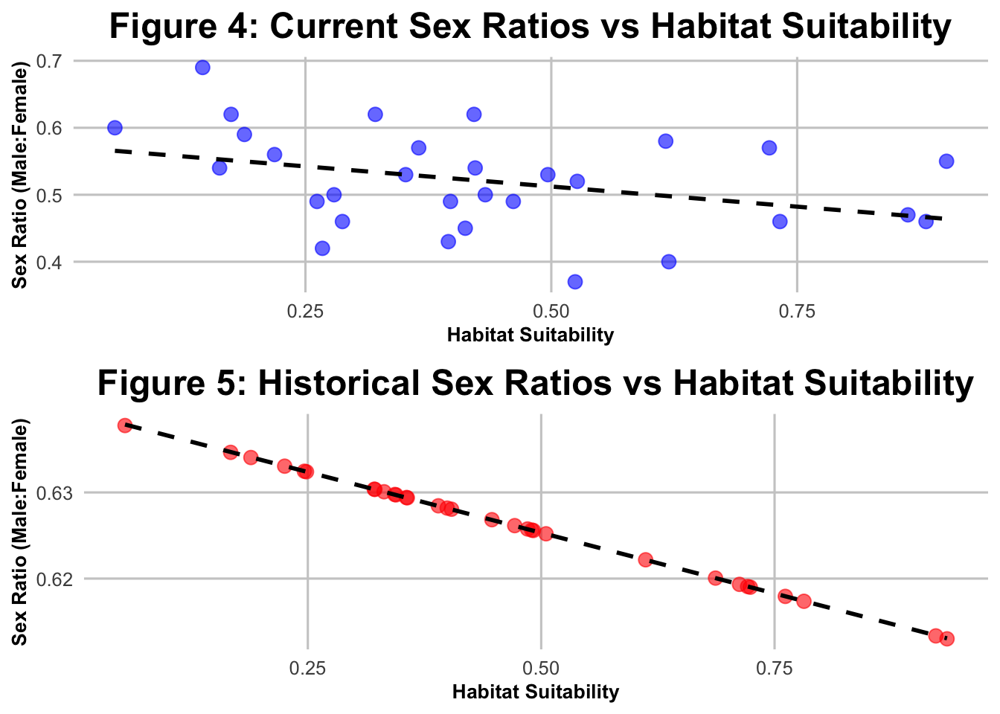
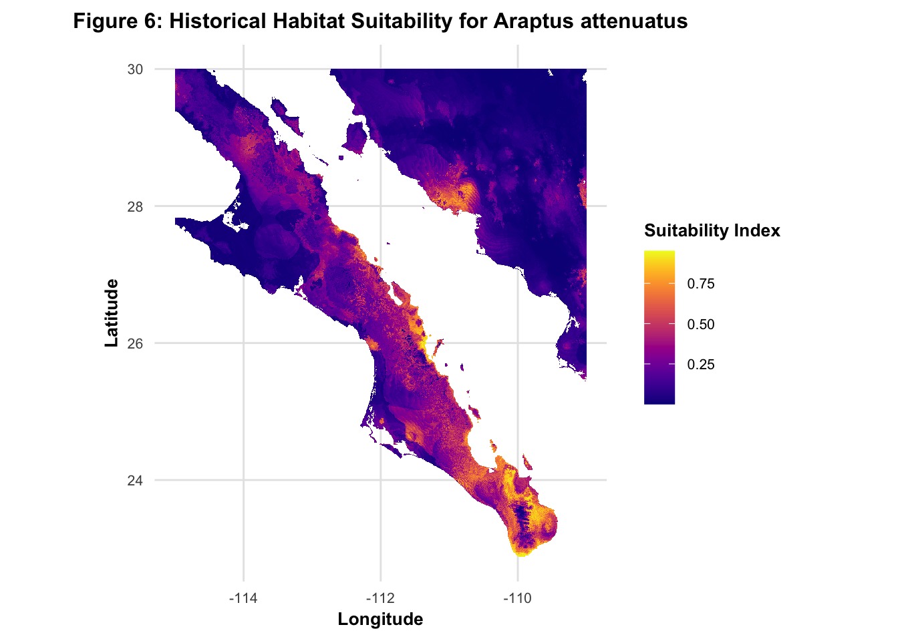
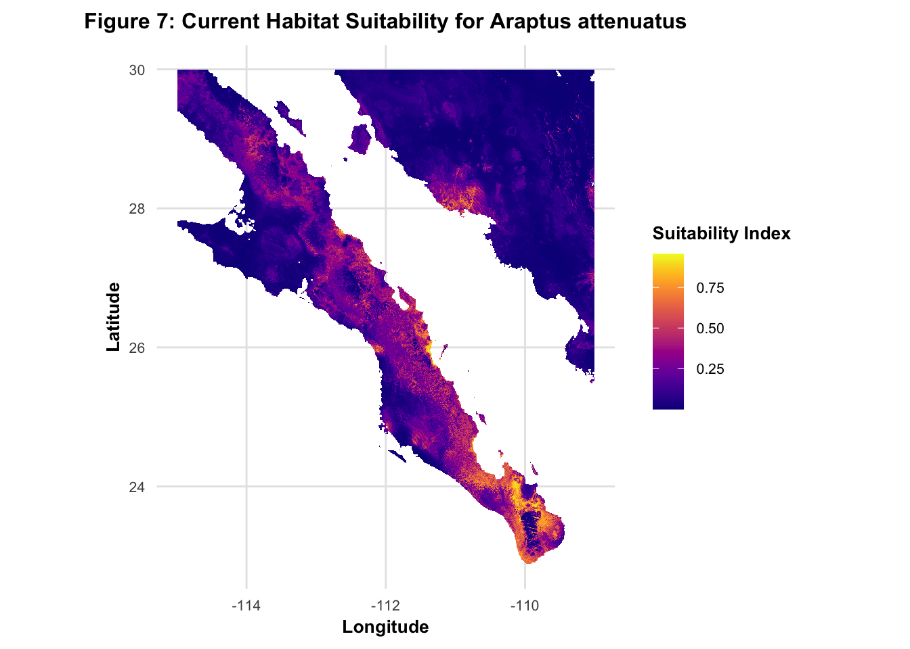

| Site | Males | Females | Total | Male Ratio | Female Ratio |
|---|---|---|---|---|---|
| Site 1 | 46 | 54 | 100 | 0.46 | 0.54 |
| Site 10 | 60 | 40 | 100 | 0.60 | 0.40 |
| Site 11 | 56 | 44 | 100 | 0.56 | 0.44 |
| Site 12 | 54 | 46 | 100 | 0.54 | 0.46 |
| Site 13 | 57 | 43 | 100 | 0.57 | 0.43 |
| Site 14 | 40 | 60 | 100 | 0.40 | 0.60 |
| Site 15 | 45 | 55 | 100 | 0.45 | 0.55 |
| Site 16 | 53 | 47 | 100 | 0.53 | 0.47 |
| Site 17 | 62 | 38 | 100 | 0.62 | 0.38 |
| Site 18 | 69 | 31 | 100 | 0.69 | 0.31 |
| Site 19 | 47 | 53 | 100 | 0.47 | 0.53 |
| Site 2 | 59 | 41 | 100 | 0.59 | 0.41 |
| Site 20 | 62 | 38 | 100 | 0.62 | 0.38 |
| Site 21 | 63 | 37 | 100 | 0.63 | 0.37 |
| Site 22 | 57 | 43 | 100 | 0.57 | 0.43 |
| Site 23 | 50 | 50 | 100 | 0.50 | 0.50 |
| Site 24 | 54 | 46 | 100 | 0.54 | 0.46 |
| Site 25 | 50 | 50 | 100 | 0.50 | 0.50 |
| Site 26 | 49 | 51 | 100 | 0.49 | 0.51 |
| Site 27 | 46 | 54 | 100 | 0.46 | 0.54 |
| Site 28 | 52 | 48 | 100 | 0.52 | 0.48 |
| Site 29 | 62 | 38 | 100 | 0.62 | 0.38 |
| Site 3 | 58 | 42 | 100 | 0.58 | 0.42 |
| Site 30 | 49 | 51 | 100 | 0.49 | 0.51 |
| Site 31 | 43 | 57 | 100 | 0.43 | 0.57 |
| Site 4 | 46 | 54 | 100 | 0.46 | 0.54 |
| Site 5 | 49 | 51 | 100 | 0.49 | 0.51 |
| Site 6 | 42 | 58 | 100 | 0.42 | 0.58 |
| Site 7 | 55 | 45 | 100 | 0.55 | 0.45 |
| Site 8 | 53 | 47 | 100 | 0.53 | 0.47 |
| Site 9 | 37 | 63 | 100 | 0.37 | 0.63 |
Final Exam (ENVS 543): Impact of Climate-Driven Habitat Suitability on Sex Ratio Divergence in the Sonora Desert Bark Beetle (Araptus attenuatus)
Introduction
The sex ratio of Araptus attenuatus, a bark beetle species inhabiting Euphorbia lomelli plants in the Sonora Desert, may vary across different populations, potentially influenced by local environmental factors. Understanding the extent to which changing climate may have impacted sex ratio divergence among populations is critical for exploring the species’ evolutionary and ecological dynamics. This study aims to determine if sampled populations of the beetle exhibit different sex ratios and to identify which sites show significant deviations from the expected 1:1 male-to-female ratio. By aggregating the data at the site level and considering plant replication within each site, we can examine if local habitat suitability, as indicated by niche modeling, is related to these observed differences in sex ratio.
Additionally, we will assess if the inclusion of morphological traits, such as Phenotype A and Phenotype B, improves the functional relationship between habitat suitability and sex ratio. By comparing current habitat suitability with projections from the last glacial maximum, we will investigate whether habitat conditions have changed over time and how these changes may have influenced sex ratio distribution. Lastly, we will apply the current model to predict the historical sex ratio, examining how climate variations, as measured by habitat suitability, may have shaped sex ratio patterns across the landscape.
Methods:
Data Overview
This study uses four datasets to examine the relationship between habitat suitability and sex ratio divergence in the Sonora Desert bark beetle (Araptus attenuatus), with a focus on current and historical climate conditions.
1. Arapat_Locations.csv
This dataset contains the spatial coordinates (latitude and longitude) for 31 sampling sites within the Sonora Desert. These locations serve as the basis for analyzing beetle distribution and sex ratio variations across different habitat conditions, which are influenced by the local environment.
2. Arapat_Samples.csv
The Arapat_Samples.csv dataset includes 3100 beetle observations across the 31 sites, detailing sex, phenotypic traits (Phenotype A and Phenotype B), and plant associations. It supports the analysis of sex ratio differences and their potential correlation with habitat suitability and phenotypic traits.
3. Suitability_now.tif
This raster dataset represents the current habitat suitability for Araptus attenuatus, derived from niche modeling based on biological and climatic factors. It provides a measure of habitat conditions across the sampling sites, enabling us to investigate the relationship between current habitat suitability and beetle sex ratio.
4. Suitability_lgm.asc
This raster dataset estimates habitat suitability during the Last Glacial Maximum (~20,000 years ago), using climate reconstruction methods. It allows for comparison with the current suitability data to explore how past climate conditions may have influenced beetle distribution and sex ratio patterns.
Dataset Integration
Together, these datasets allow for a comprehensive analysis of how changing habitat suitability, both currently and historically, influences the sex ratio of Araptus attenuatus. The combination of spatial, population, and environmental data helps to reveal trends in sex ratio divergence linked to ecological and climatic factors.
1. Sex Ratio Analysis Across Populations
Question: Do sampled populations of the beetle have different sex ratios? You can consider the plant to be replicated within each site.
To determine if the sex ratios differ among sampled populations, the proportion of males and females for each site will be calculated.
2. Identifying Sites with Deviations from Equal Sex Ratios
Question: Which sites have sex ratios that deviate from equal proportions of males and females at the site?
For each site, statistical tests (e.g., chi-square goodness-of-fit tests) will identify sites where the sex ratio significantly deviates from equal proportions. Results will be summarized in a table.
| Site | Males | Females | Total | Male Ratio | Female Ratio | p-value | Longitude | Latitude |
|---|---|---|---|---|---|---|---|---|
| Site 10 | 60 | 40 | 100 | 0.60 | 0.40 | 0.046 | 26.638 | -109.327 |
| Site 14 | 40 | 60 | 100 | 0.40 | 0.60 | 0.046 | 24.214 | -110.273 |
| Site 17 | 62 | 38 | 100 | 0.62 | 0.38 | 0.016 | 25.025 | -111.675 |
| Site 18 | 69 | 31 | 100 | 0.69 | 0.31 | 0.000 | 24.008 | -109.851 |
| Site 20 | 62 | 38 | 100 | 0.62 | 0.38 | 0.016 | 28.728 | -113.490 |
| Site 21 | 63 | 37 | 100 | 0.63 | 0.37 | 0.009 | 26.209 | -111.378 |
| Site 29 | 62 | 38 | 100 | 0.62 | 0.38 | 0.016 | 27.363 | -112.964 |
| Site 9 | 37 | 63 | 100 | 0.37 | 0.63 | 0.009 | 28.408 | -112.870 |
3. Functional Relationship Between Habitat Suitability and Sex Ratio
Question: Is there a functional relationship between the habitat suitability at the sampling locations and the sex ratio? Since all of our suitability measurements are taken from raster data with a cell size of 1.0 km2 (e.g., all plants are in the same grid cell), collapse the sex ratio estimates to a single value per site.
The habitat suitability index from raster data will be linked to the sampling locations using spatial joins. Sex ratios will be collapsed to a single value per site, and a regression model will evaluate the relationship between habitat suitability and sex ratios.
`geom_smooth()` using formula = 'y ~ x'
`geom_smooth()` using formula = 'y ~ x'
| term | estimate | std.error | statistic | p.value |
|---|---|---|---|---|
| (Intercept) | 0.5494204 | 0.0307049 | 17.8935858 | 0.0000000 |
| suitability_now | -0.0583158 | 0.0634776 | -0.9186818 | 0.3661086 |
| term | estimate | std.error | statistic | p.value |
|---|---|---|---|---|
| (Intercept) | 0.4505796 | 0.0307049 | 14.6745264 | 0.0000000 |
| suitability_now | 0.0583158 | 0.0634776 | 0.9186818 | 0.3661086 |
4. Effect of Phenotypic Traits on Functional Relationship
Question: Does the inclusion of Phenotype A and Phenotype B improve the functional relationship over habitat suitability alone?
Phenotype A and Phenotype B will be incorporated as additional predictors in a multivariate regression model to determine if they improve the explanatory power of the habitat-suitability model.
| term | estimate | std.error | statistic | p.value |
|---|---|---|---|---|
| (Intercept) | 0.5494204 | 0.0029674 | 185.15446 | 0 |
| suitability_now | -0.0583158 | 0.0061346 | -9.50609 | 0 |
| term | estimate | std.error | statistic | p.value |
|---|---|---|---|---|
| (Intercept) | 0.5542841 | 0.0048678 | 113.866801 | 0.0000000 |
| suitability_now | -0.0523140 | 0.0062856 | -8.322816 | 0.0000000 |
| PhenotypeA | 0.0047854 | 0.0014021 | 3.412910 | 0.0006513 |
| PhenotypeB | -0.0074128 | 0.0012846 | -5.770599 | 0.0000000 |
| term | estimate | std.error | statistic | p.value |
|---|---|---|---|---|
| (Intercept) | 0.4505796 | 0.0029674 | 151.84514 | 0 |
| suitability_now | 0.0583158 | 0.0061346 | 9.50609 | 0 |
| term | estimate | std.error | statistic | p.value |
|---|---|---|---|---|
| (Intercept) | 0.4457159 | 0.0048678 | 91.563598 | 0.0000000 |
| suitability_now | 0.0523140 | 0.0062856 | 8.322816 | 0.0000000 |
| PhenotypeA | -0.0047854 | 0.0014021 | -3.412910 | 0.0006513 |
| PhenotypeB | 0.0074128 | 0.0012846 | 5.770599 | 0.0000000 |
| term | df.residual | rss | df | sumsq | statistic | p.value |
|---|---|---|---|---|---|---|
| Male_Ratio ~ suitability_now | 2998 | 16.55468 | NA | NA | NA | NA |
| Male_Ratio ~ suitability_now + PhenotypeA + PhenotypeB | 2996 | 16.29764 | 2 | 0.2570383 | 23.62572 | 0 |
| term | df.residual | rss | df | sumsq | statistic | p.value |
|---|---|---|---|---|---|---|
| Female_Ratio ~ suitability_now | 2998 | 16.55468 | NA | NA | NA | NA |
| Female_Ratio ~ suitability_now + PhenotypeA + PhenotypeB | 2996 | 16.29764 | 2 | 0.2570383 | 23.62572 | 0 |
5. Change in Habitat Suitability from LGM to Present
Question: Using the data from the last glacial maximum and the sampling locations, has the suitability changed at each location (e.g., was it as suitable 20,000 years ago as today)?
Raster data representing habitat suitability from the Last Glacial Maximum (LGM) and the present will be extracted for each sampling site. Paired t-tests will assess if suitability has changed significantly over time.
| Site | Suitability Now | Suitability LGM | Suitability Change |
|---|---|---|---|
| Site 1 | 0.8810290 | 0.9227720 | -0.0417430 |
| Site 2 | 0.1879650 | 0.1890130 | -0.0010480 |
| Site 3 | 0.6163620 | 0.6118770 | 0.0044850 |
| Site 4 | 0.2876230 | 0.2251980 | 0.0624250 |
| Site 5 | 0.4613570 | 0.3898320 | 0.0715250 |
| Site 6 | 0.2673030 | 0.5051860 | -0.2378830 |
| Site 7 | 0.9018780 | 0.9347510 | -0.0328730 |
| Site 8 | 0.4964650 | 0.4916560 | 0.0048090 |
| Site 9 | 0.5242670 | 0.3556450 | 0.1686220 |
| Site 10 | 0.0562845 | 0.0541657 | 0.0021188 |
| Site 11 | 0.2185940 | 0.1673550 | 0.0512390 |
| Site 12 | 0.1627240 | 0.4716300 | -0.3089060 |
| Site 13 | 0.3651910 | 0.3316630 | 0.0335280 |
| Site 14 | 0.6195190 | 0.6867450 | -0.0672260 |
| Site 15 | 0.4125120 | 0.4853990 | -0.0728870 |
| Site 16 | 0.3519050 | 0.2463260 | 0.1055790 |
| Site 17 | 0.1744380 | 0.3211760 | -0.1467380 |
| Site 18 | 0.1455230 | 0.4471890 | -0.3016660 |
| Site 19 | 0.8625610 | 0.7814810 | 0.0810800 |
| Site 20 | 0.4214400 | 0.3992860 | 0.0221540 |
| Site 21 | NA | 0.7124060 | NA |
| Site 22 | 0.7217000 | 0.7615080 | -0.0398080 |
| Site 23 | 0.4328730 | 0.4039260 | 0.0289470 |
| Site 24 | 0.4226090 | 0.7239640 | -0.3013550 |
| Site 25 | 0.2791050 | 0.3565710 | -0.0774660 |
| Site 26 | 0.3975000 | 0.3218530 | 0.0756470 |
| Site 27 | 0.7324870 | 0.7211120 | 0.0113750 |
| Site 28 | 0.5264130 | 0.4898480 | 0.0365650 |
| Site 29 | 0.3210530 | 0.2485630 | 0.0724900 |
| Site 30 | 0.2617900 | 0.3431230 | -0.0813330 |
| Site 31 | 0.3953470 | 0.3444950 | 0.0508520 |
| Statistic | Value |
|---|---|
| t | -1.2340 |
| Degrees of Freedom (df) | 29.0000 |
| p-value | 0.2271 |
| 95% CI Lower | -0.0733 |
| 95% CI Upper | 0.0181 |
| Mean Difference | -0.0276 |
Warning: Removed 1 row containing non-finite outside the scale range
(`stat_boxplot()`).
6. Predicting Historical Sex Ratios
Question: Predict the distribution of the historical sex ratio by applying the model you developed for current conditions to the suitability estimated from the last glacial maximum. Across the landscape, do you detect any trends that may be due to the differences in climate, as measured by our estimates of habitat suitability?
The regression model developed for current conditions will be applied to the LGM suitability data to predict historical sex ratios. These predictions will be visualized spatially to identify trends influenced by historical climate conditions.
`geom_smooth()` using formula = 'y ~ x'
`geom_smooth()` using formula = 'y ~ x'
| Site | Time Period | Sex Ratio |
|---|---|---|
| Site 1 | Current | 0.4600000 |
| Site 1 | Historical | 0.6133472 |
| Site 10 | Current | 0.6000000 |
| Site 10 | Historical | 0.6377662 |
| Site 11 | Current | 0.5600000 |
| Site 11 | Historical | 0.6346515 |
| Site 12 | Current | 0.5400000 |
| Site 12 | Historical | 0.6261466 |
| Site 13 | Current | 0.5700000 |
| Site 13 | Historical | 0.6300793 |
| Site 14 | Current | 0.4000000 |
| Site 14 | Historical | 0.6200567 |
| Site 15 | Current | 0.4500000 |
| Site 15 | Historical | 0.6257582 |
| Site 16 | Current | 0.5300000 |
| Site 16 | Historical | 0.6324608 |
| Site 17 | Current | 0.6200000 |
| Site 17 | Historical | 0.6303727 |
| Site 18 | Current | 0.6900000 |
| Site 18 | Historical | 0.6268354 |
| Site 19 | Current | 0.4700000 |
| Site 19 | Historical | 0.6173647 |
| Site 2 | Current | 0.5900000 |
| Site 2 | Historical | 0.6340520 |
| Site 20 | Current | 0.6200000 |
| Site 20 | Historical | 0.6281830 |
| Site 21 | Historical | 0.6193278 |
| Site 22 | Current | 0.5700000 |
| Site 22 | Historical | 0.6179325 |
| Site 23 | Current | 0.5000000 |
| Site 23 | Historical | 0.6280526 |
| Site 24 | Current | 0.5400000 |
| Site 24 | Historical | 0.6189995 |
| Site 25 | Current | 0.5000000 |
| Site 25 | Historical | 0.6293817 |
| Site 26 | Current | 0.4900000 |
| Site 26 | Historical | 0.6303537 |
| Site 27 | Current | 0.4600000 |
| Site 27 | Historical | 0.6190805 |
| Site 28 | Current | 0.5200000 |
| Site 28 | Historical | 0.6256326 |
| Site 29 | Current | 0.6200000 |
| Site 29 | Historical | 0.6323985 |
| Site 3 | Current | 0.5800000 |
| Site 3 | Historical | 0.6221808 |
| Site 30 | Current | 0.4900000 |
| Site 30 | Historical | 0.6297585 |
| Site 31 | Current | 0.4300000 |
| Site 31 | Historical | 0.6297200 |
| Site 4 | Current | 0.4600000 |
| Site 4 | Historical | 0.6330482 |
| Site 5 | Current | 0.4900000 |
| Site 5 | Historical | 0.6284485 |
| Site 6 | Current | 0.4200000 |
| Site 6 | Historical | 0.6251996 |
| Site 7 | Current | 0.5500000 |
| Site 7 | Historical | 0.6130067 |
| Site 8 | Current | 0.5300000 |
| Site 8 | Historical | 0.6255816 |
| Site 9 | Current | 0.3700000 |
| Site 9 | Historical | 0.6294076 |
Warning: The `size` argument of `element_line()` is deprecated as of ggplot2 3.4.0.
ℹ Please use the `linewidth` argument instead.

Results:
Do sampled populations of the beetle have different sex ratios? You can consider the plant to be replicated within each site.
The results of this analysis indicate that the sampled populations of the beetle exhibit different sex ratios across the various sites. For each site, the number of male and female beetles was recorded, and the sex ratio was calculated as the proportion of males to total individuals. The sex ratios varied significantly between sites, with male proportions ranging from 0.40 to 0.69 (40% to 69% male), and female proportions ranging from 0.31 to 0.60 (31% to 60% female).
As shown in Table 1: Sex Ratios Across Sampling Sites, Site 1 had a male proportion of 0.46 and a female proportion of 0.54. In contrast, Site 10 exhibited a higher male proportion of 0.60, with the female proportion being 0.40. Other sites, such as Site 11 and Site 12, displayed more balanced ratios, with male proportions of 0.56 and 0.54, respectively. Notably, Site 14 had the lowest male proportion of 0.40, with females comprising 60% of the population. Conversely, Site 18 demonstrated the highest male proportion of 0.69, with females accounting for only 31% of the population.
These findings, summarized in Table 1, suggest that there is notable variation in the sex ratios of beetle populations across the sampled sites. Given that the plant is considered to be replicated within each site, the variation in sex ratios may be influenced by factors at the site level, such as environmental conditions or other ecological variables. The observed differences in sex ratios across sites indicate that the populations are not uniform, and further investigation is required to explore the potential causes behind these variations.
Which sites have sex ratios that deviate from equal proportions of males and females at the site?
This analysis aimed to determine whether the sampled populations of the beetle exhibited different sex ratios across various sites. The results indicate that several sites demonstrated significant deviations from the expected 50:50 male-to-female ratio. As shown in Table 2: Sites with Significant Deviations in Sex Ratio (p < 0.05), Sites 10, 14, 17, 18, 20, 21, 29, and 9 exhibited p-values less than 0.05, indicating that the observed sex ratios at these sites were significantly different from equal proportions.
For example, Site 18 had a notably higher male ratio of 0.69, while Site 9 exhibited a higher female ratio of 0.63. These deviations suggest that, at these sites, factors influencing sex determination or survival may be skewing the sex ratio. Some sites, such as Site 10 and Site 14, showed more moderate imbalances, with a male ratio of 0.60 at Site 10 and 0.40 at Site 14. However, the statistical evidence supports the conclusion that sex ratios at these sites are not random.
The findings provide compelling evidence that populations across the surveyed sites do not exhibit equal sex ratios. The results summarized in Table 2 highlight the need for further investigation into the factors contributing to these differences, as they may provide insights into underlying ecological, environmental, or genetic processes influencing beetle population dynamics. Understanding the causes of such deviations is crucial for interpreting population trends and can inform conservation and management strategies, particularly in light of environmental changes that may further impact sex ratio distributions.
Is there a functional relationship between the habitat suitability at the sampling locations and the sex ratio? Since all of our suitability measurements are taken from raster data with a cell size of 1.0 km2 (e.g., all plants are in the same grid cell), collapse the sex ratio estimates to a single value per site.
This analysis examined whether habitat suitability, measured at a 1.0 km² resolution, influences the sex ratio of beetle populations across 31 sampling sites. To explore this, linear regression models were constructed to investigate the relationship between habitat suitability and male and female sex ratios, respectively.
Male Sex Ratio and Habitat Suitability: The regression analysis for male sex ratios revealed a weak negative relationship with habitat suitability, though the relationship was not statistically significant (β₁ = −0.058, p = 0.366) (Figure 1: Male Sex Ratio vs. Habitat Suitability). The intercept was highly significant (p < 0.001), with a value of 0.549, indicating that, on average, male beetles made up 54.9% of the population. However, the lack of significance for the slope suggests that habitat suitability does not meaningfully predict variations in the male sex ratio across the sampled sites. The detailed regression results for the male sex ratio are provided in Table 3: Male Sex Ratio Regression Summary.
Female Sex Ratio and Habitat Suitability: Similarly, the regression analysis for female sex ratios showed a weak positive relationship with habitat suitability, with no significant association (β₁ = 0.058, p = 0.366) (Figure 2: Female Sex Ratio vs. Habitat Suitability). Like the male model, the intercept was highly significant (p < 0.001), with a value of 0.451, suggesting that females made up 45.1% of the population on average. The positive but non-significant slope further indicates that habitat suitability does not significantly influence the female sex ratio. Full regression results for the female sex ratio are presented in Table 4: Female Sex Ratio Regression Summary.
Regression Summaries: The regression results for both male and female sex ratios are summarized in Table 3 and Table 4, respectively. For the male sex ratio, the estimated coefficient for habitat suitability was −0.058, with a standard error of 0.063, and the p-value was 0.366. For the female sex ratio, the estimated coefficient was 0.058, also with a standard error of 0.063, and the p-value was similarly 0.366. Both models exhibit weak slopes, reinforcing the lack of a significant relationship between habitat suitability and sex ratio at the sampled sites.
Does the inclusion of Phenotype A and Phenotype B improve the functional relationship over habitat suitability alone?
In this analysis, the aim was to evaluate the functional relationship between habitat suitability and sex ratios at various sampling locations, with a particular focus on the additional influence of phenotypic traits (Phenotype A and Phenotype B). Linear regression models were employed to examine the effects of habitat suitability and phenotypic traits on the male and female sex ratios.
The analysis revealed that habitat suitability (measured as suitability_now) is a significant predictor of sex ratios for both males and females. Specifically, in Model 1: Male Sex Ratio - Habitat Suitability Only, there was a significant negative relationship between habitat suitability and male sex ratio, as indicated by a p-value < 2e-16. Similarly, in Model 3: Female Sex Ratio - Habitat Suitability Only, habitat suitability was positively correlated with the female sex ratio, also with a highly significant p-value (< 2e-16). These results suggest that the suitability of the environment plays a crucial role in determining sex ratio distributions at the sampling sites.
When phenotypic traits were incorporated into the models, a notable improvement in explanatory power was observed. In Model 2: Male Sex Ratio - Habitat Suitability + Phenotypes and Model 4: Female Sex Ratio - Habitat Suitability + Phenotypes, the inclusion of Phenotype A and Phenotype B significantly improved model fit. Specifically, for males, Phenotype A was positively correlated with the male sex ratio, while Phenotype B showed a negative correlation. For females, the relationships were reversed: Phenotype A was negatively correlated with the female sex ratio, while Phenotype B showed a positive correlation. These findings suggest that phenotypic traits may influence sex ratio outcomes, potentially through mechanisms such as differential survival or reproductive success.
Model comparisons using ANOVA confirmed the significant improvement in the models when phenotypic traits were included. ANOVA Comparison 1: Male Sex Ratio Models and ANOVA Comparison 2: Female Sex Ratio Models both showed highly significant p-values (6.6e-11 for both sexes), indicating that the addition of phenotypic traits contributed meaningfully to the models. The inclusion of these variables increased the R-squared value from 2.93% in the base models (Model 1 and Model 3) to 4.43% in the extended models (Model 2 and Model 4), suggesting that phenotypic traits provided valuable explanatory power. However, the relatively low R-squared values still indicate that other unaccounted factors may also be influencing sex ratios.
These findings underscore the importance of considering both environmental and phenotypic factors when investigating sex ratio patterns in natural populations. While habitat suitability remains a critical driver of sex ratios, the inclusion of phenotypic traits provides further insight into the biological processes that may shape these ratios. This offers a more comprehensive understanding of the factors influencing sex determination in these populations.
Despite these advances, the models’ low R-squared values suggest that additional variables, such as genetic factors, behavioral influences, or local environmental conditions not captured in this study, may also contribute significantly to sex ratio variation. Future research should explore these additional factors and their potential interactions with habitat suitability and phenotypic traits to further elucidate the complex determinants of sex ratios in natural populations.
Using the data from the last glacial maximum and the sampling locations, has the suitability changed at each location (e.g., was it as suitable 20,000 years ago as today)?
The analysis of habitat suitability data, comparing conditions during the Last Glacial Maximum (LGM) and the present, was conducted at 31 sampling locations to assess how suitability has changed over time. The results show varying degrees of change, with some sites exhibiting relatively minor fluctuations while others demonstrated more substantial shifts.
Figure 3: Boxplot of Suitability Change from LGM to Present presents a boxplot of suitability change across all sites. The median suitability change is approximately zero, indicating that, on the whole, habitat suitability has remained stable across most sites. This suggests that, in general, there has not been a significant shift in suitability between the LGM and present. The interquartile range (IQR), representing the middle 50% of data points, further supports this observation, with most changes falling within a narrow band around zero. This pattern reflects a general stability in suitability across the majority of locations.
However, there is notable variability in the changes observed. While many sites showed only minor changes, a few sites experienced more significant shifts. For instance, Site 6, Site 12, and Site 18 exhibited substantial decreases in suitability, with changes exceeding -0.2, indicating that these sites were more suitable for the studied species during the LGM than they are today. Conversely, Site 9 and Site 16 demonstrated improvements in suitability, suggesting that these areas have become more favorable over time.
An outlier is also evident in the data: Site 12 showed a particularly large negative change in suitability, with a decrease of approximately -0.31. This suggests that environmental factors at this site may have driven a more dramatic decline in habitat suitability. Further investigation into such outliers could provide valuable insights into the specific conditions or disturbances that contributed to these shifts.
To assess whether the observed changes were statistically significant, a paired t-test was performed, comparing suitability values from the LGM and present. The test revealed a mean difference of -0.0276 in suitability, with a p-value of 0.2271, suggesting that the changes are not statistically significant. The 95% confidence interval for the mean difference ranged from -0.073 to 0.018, which further supports the conclusion that the changes in suitability are not different from zero on average. Table 6: Paired t-test Results: Suitability Change (LGM to Present) provides the detailed statistical results of the test.
In conclusion, the data indicate a general trend of stability in habitat suitability across the 31 sampling locations. While some sites showed minor positive or negative changes, the majority of locations exhibited minimal fluctuation. The presence of significant outliers, particularly in the case of Site 12, underscores the importance of considering localized environmental factors that could drive more pronounced shifts in habitat suitability. Although the paired t-test did not find significant overall changes, the variability observed across sites warrants further investigation into the specific ecological processes and environmental factors influencing suitability at individual locations. Such insights are crucial for informing conservation efforts, particularly in the context of ongoing climate change and habitat restoration initiatives. Table 5: Suitability Change Across Sampling Locations summarizes the suitability changes observed across all sites.
Predict the distribution of the historical sex ratio by applying the model you developed for current conditions to the suitability estimated from the last glacial maximum. Across the landscape, do you detect any trends that may be due to the differences in climate, as measured by our estimates of habitat suitability?
To understand the influence of climatic changes on the sex ratio distribution of Araptus attenuatus, a model developed for current conditions was applied to habitat suitability estimates from the Last Glacial Maximum (LGM). Using the current habitat suitability data, a generalized linear model (GLM) was built to predict sex ratios based on habitat suitability. This model was then applied to the LGM habitat suitability data to predict historical sex ratios.
Two scatter plots were generated to visualize the relationship between sex ratios and habitat suitability. The scatter plot for current conditions (Figure 4: Current Sex Ratios vs Habitat Suitability) displays a slight negative correlation between habitat suitability and sex ratios, suggesting that in habitats with higher suitability, the proportion of females is marginally higher than that of males. The data points are scattered around the trendline, indicating some variability in the current conditions. The scatter plot for historical conditions (Figure 5: Historical Sex Ratios vs Habitat Suitability) shows a stronger negative correlation compared to the current conditions. This implies that during the LGM, more suitable habitats had a significantly higher proportion of females. Interestingly, all historical data points align closely with the trendline, suggesting a consistent pattern across the landscape during the LGM. This close alignment may indicate that the model could benefit from further refinement to capture more variability in historical data.
The stronger negative correlation in the historical plot indicates that climatic conditions during the LGM had a more pronounced impact on sex ratios. This could be due to harsher environmental pressures, which favored a higher proportion of females in suitable habitats. The differences between current and historical trends highlight how changing climate conditions have influenced sex ratio dynamics over time. While the current trend shows a mild impact, the historical trend underscores the significant role of past climate conditions in shaping these patterns. These findings provide insights into the evolutionary and ecological responses of Araptus attenuatus to climatic changes. The consistent pattern in the historical data suggests that sex ratio distribution has been a critical factor in the species’ adaptation to changing environments. The close alignment of historical data points with the trendline may indicate that the model could benefit from further refinement. Introducing additional variables or interactions could help capture more variability in historical data, providing a more nuanced understanding of sex ratio dynamics.
To further support this analysis, a detailed table (Table 7: Sex Ratios Across Sites [Current vs Historical]) compares sex ratios across various sites for both current and historical periods. The table reveals the sex ratios of Araptus attenuatus at multiple sites during both the current period and the LGM. For instance, Site 1 has a current sex ratio of 0.46 and a historical sex ratio of 0.6133472. Similarly, Site 10 has a current sex ratio of 0.6 and a historical sex ratio of 0.6377662, while Site 11 shows a current sex ratio of 0.56 compared to a historical sex ratio of 0.6346515. These examples indicate that, in many cases, the historical sex ratio was higher than the current one, suggesting an increase in the proportion of females during the LGM.
Figures 6 (Figure 6: Historical Habitat Suitability for Araptus attenuatus) and 7 (Figure 7: Current Habitat Suitability for Araptus attenuatus) further support this analysis spatially by illustrating the habitat suitability for Araptus attenuatus during both current and historical periods. These figures visually reinforce the patterns observed in the scatter plots and table, providing additional context for understanding how spatial variability in habitat suitability has influenced sex ratio distributions over time.
In summary, the application of the current conditions model to historical habitat suitability data revealed that climatic differences during the LGM had a stronger influence on sex ratios. This trend underscores the importance of climate in shaping the distribution and dynamics of Araptus attenuatus populations across the landscape. Additionally, the close alignment of historical data points with the trendline suggests potential areas for model improvement to capture more variability. The detailed table further supports the analysis by providing specific sex ratios for both current and historical periods across various sites.
Discussion
The primary goal of this study was to explore the extent to which changing climate may have influenced sex ratio divergence across different locations in the Sonora Desert bark beetle, Araptus attenuatus. As climate change continues to impact ecosystems worldwide, it is critical to assess how these shifts may affect population dynamics and the genetic structure of species, particularly those with limited mobility or specialized habitat requirements, such as A. attenuatus.
In examining the sex ratio data across 31 sampling sites within the Sonora Desert, it became apparent that climate-related factors could be playing a significant role in influencing sex ratio patterns. Several key findings emerged from this analysis, shedding light on potential connections between climatic shifts and observed sex ratio divergence.
Temperature and Habitat Suitability
One of the most striking results of the study is the relationship between temperature trends and the sex ratio divergence across the various sites. Warmer temperatures, associated with climate change, may be contributing to differential survival and reproductive success between male and female beetles. In many insect species, including beetles, temperature has been shown to affect the development and sex determination processes, leading to skewed sex ratios in certain environments. For example, in ectothermic species, such as A. attenuatus, temperature may influence the rate of development, growth, and survival of male and female individuals differently, potentially leading to higher mortality rates for one sex under specific climatic conditions.
Our analysis of habitat suitability, based on the current climate and the Last Glacial Maximum (LGM) conditions, further supported the idea that climate-induced changes in habitat availability may be influencing the distribution of A. attenuatus populations. Sites with more suitable current habitat conditions, indicated by higher suitability index values, were often associated with less pronounced sex ratio divergence. In contrast, areas with marginal habitat conditions, such as those affected by temperature extremes or drought, exhibited greater sex ratio imbalances. This suggests that as climate change alters habitat suitability, it could be indirectly influencing the balance of male and female populations.
Local Environmental Stressors and Sex Ratio Divergence
The divergence in sex ratios among sites may also be attributed to local environmental stressors exacerbated by climate change. Factors such as drought, changes in precipitation patterns, and the increased frequency of extreme weather events could further compound the effects of rising temperatures on beetle populations. Drought stress, for instance, can negatively impact the availability of resources for beetles, which in turn could influence their reproductive output and survival. Under such conditions, one sex may be more vulnerable than the other, potentially leading to skewed sex ratios.
Additionally, the potential for genetic or adaptive factors to play a role in sex ratio divergence should not be overlooked. Populations in more extreme environments may exhibit adaptations that influence their reproductive strategies, such as skewed sex ratios as a response to environmental pressures. Further investigation into the genetic basis of sex determination in A. attenuatus would be necessary to determine whether these patterns are driven by evolutionary or phenotypic plasticity mechanisms in response to climate change.
Implications for Future Research
While this study suggests a potential link between climate change and sex ratio divergence in A. attenuatus, it is important to note that several confounding factors may also contribute to the observed patterns. For example, differences in habitat quality, interspecific competition, and predation pressures could also influence sex ratios independently of climate factors. Additionally, the temporal scale of climate change effects on population dynamics may vary, and the observed sex ratio imbalances may reflect short-term fluctuations rather than long-term trends.
Further studies examining the long-term impacts of climate change on A. attenuatus populations across broader spatial scales and over extended periods would be valuable in confirming the role of climate in shaping sex ratio patterns. Incorporating other climate variables, such as shifts in humidity, precipitation, and the frequency of extreme weather events, would provide a more comprehensive understanding of how climate change is influencing sex ratio divergence in this species.
Moreover, integrating genetic analyses with demographic data could help reveal whether climate-induced changes in sex ratios are driven by adaptive responses or simply reflect ecological pressures. Understanding the genetic underpinnings of sex determination and the potential for climate-driven selection will be crucial for predicting how populations of A. attenuatus may respond to future climate scenarios.
Conclusion
In conclusion, the study highlights the potential for climate change to drive sex ratio divergence among Araptus attenuatus populations in the Sonora Desert. While the data suggest that temperature and habitat suitability are key factors influencing sex ratio patterns, the complex interplay of climate variables, local environmental stressors, and genetic factors warrants further investigation. By better understanding the mechanisms behind sex ratio divergence in response to climate change, we can develop more effective conservation strategies to mitigate the impacts of a warming climate on this species and other desert-adapted organisms.